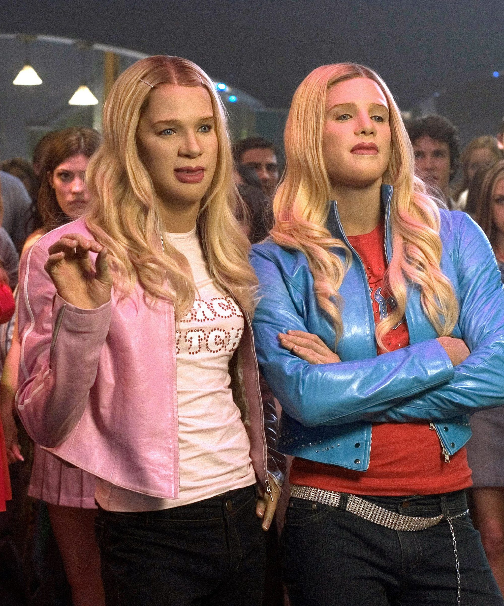
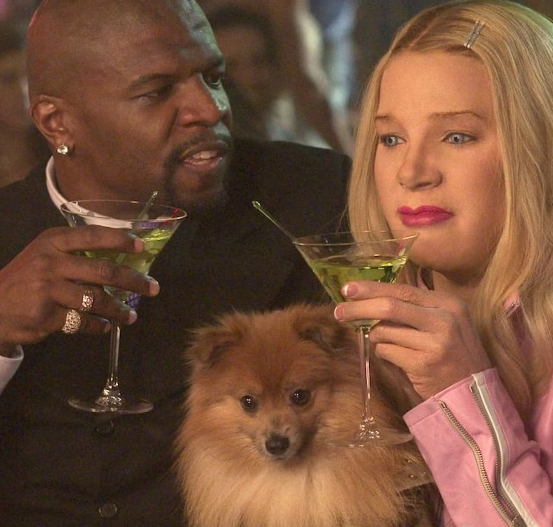
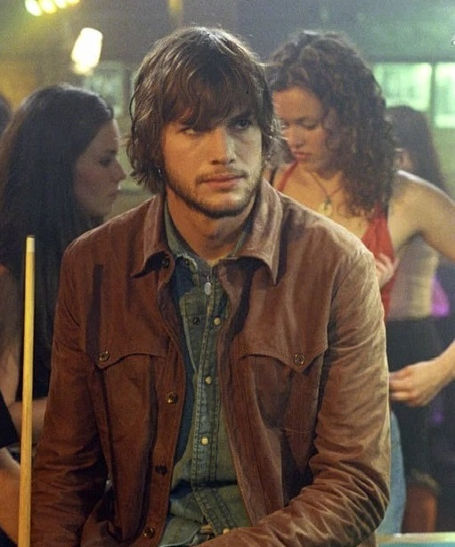
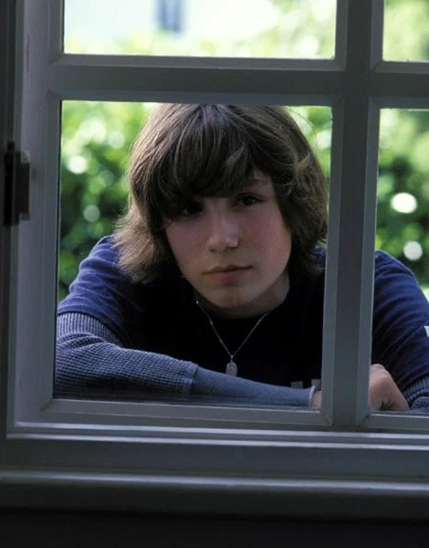

Август Раш
Краткое содержание фильма
Молодой харизматичный ирландский гитарист и американская виолончелистка из престижной семьи полюбили друг друга. После волшебной встречи в Нью-Йорке обстоятельства оказываются сильнее их, и они вынуждены расстаться. Родившийся ребёнок, Август Раш, по столь же несчастливому стечению обстоятельств оказывается в одном из нью-йоркских приютов.
Двенадцать лет спустя Август Раш, необыкновенно талантливый для своего возраста музыкант, отчаянно стремится найти своих родителей. Единственной возможностью для этого он считает свою музыку — юный музыкант верит, что если он будет играть, его родители смогут узнать и найти его по музыке. Теперь, опекаемый загадочным незнакомцем, он играет на улицах Нью-Йорка и пытается найти родителей, которых никогда не видел, с помощью своего исключительного музыкального дара.
Кадры из фильма
О фильме
| Год |
2007 |
| Страна |
США, Южная Корея |
| Жанр |
Драма, музыка, семейный |
| Режиссёр |
Кёрстен Шеридан |
Белые Цыпочки
Краткое содержание фильма
Проштрафившиеся агенты ФБР - чернокожие братья Кевин и Маркус - решают обелить себя перед руководством. Им поручают защиту сестёр Уилтон, наследниц огромной гостиничной империи. Герои прячут сестёр в укромном месте, при этом сами в них перевоплощаются. Остаётся только убедить всех в том, что они действительно молодые белые миллионерши.
Кадры из фильма
 |
 |
 |
О фильме
| Год |
2004 |
| Страна |
США |
| Жанр |
Комедия, криминал |
| Режиссёр |
Кинен Айвори Уайанс |
Эффект Бабочки
Краткое содержание фильма
Эван перенял от своего отца-психопата, ныне запертого в доме для умалишённых, странную болезнь — он не помнит некоторых эпизодов своей жизни, причем в эти моменты происходили довольно странные, а то и ужасные события. Поступив в колледж, Эван делает удивительное открытие. Читая дневники, которые писал в детстве по совету врача, он может возвращаться в детство и менять будущее.
Кадры из фильма
 |
 |
 |
О фильме
| Год |
2003 |
| Страна |
США, Канада |
| Жанр |
Фантастика, триллер, драма |
| Режиссёр |
Эрик Бресс, Дж. Макки Грубер |